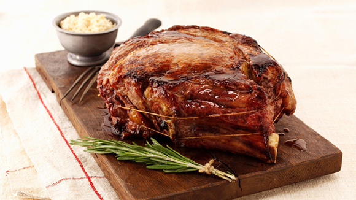

Recetas de la abuela
Deliciosas recetas caseras
Home
Carne al horno
Brownies
Carne al horno con papas

Ingredientes:
750 gr de Vacío.
Cebollas.
Tomates.
Lechugas.
Preparación:
Pelar los tomates.
Lavar la lechuga.
Saltear las cebollas.
Asar la carne.